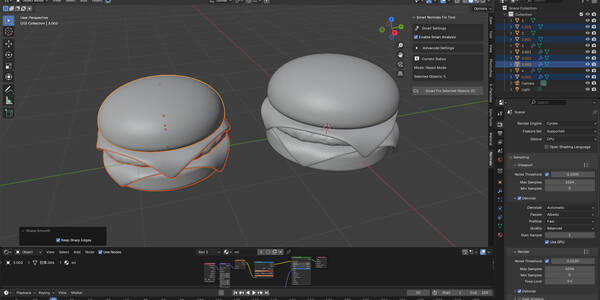
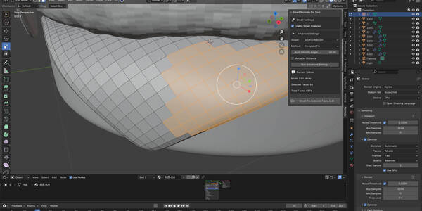
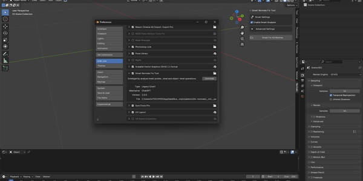
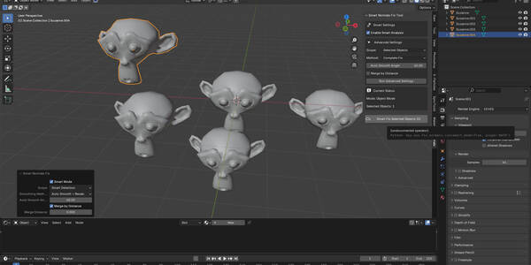
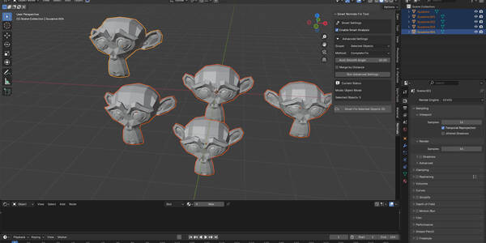
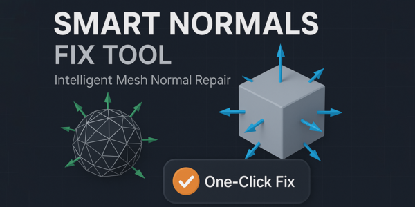
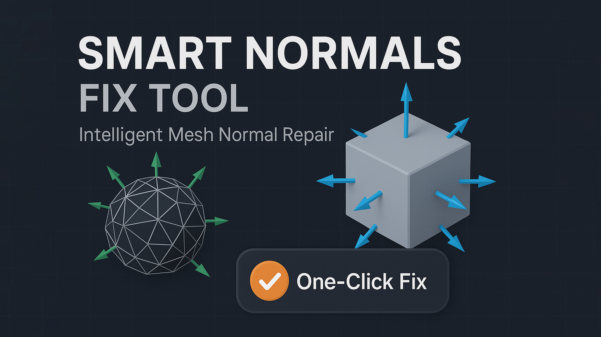
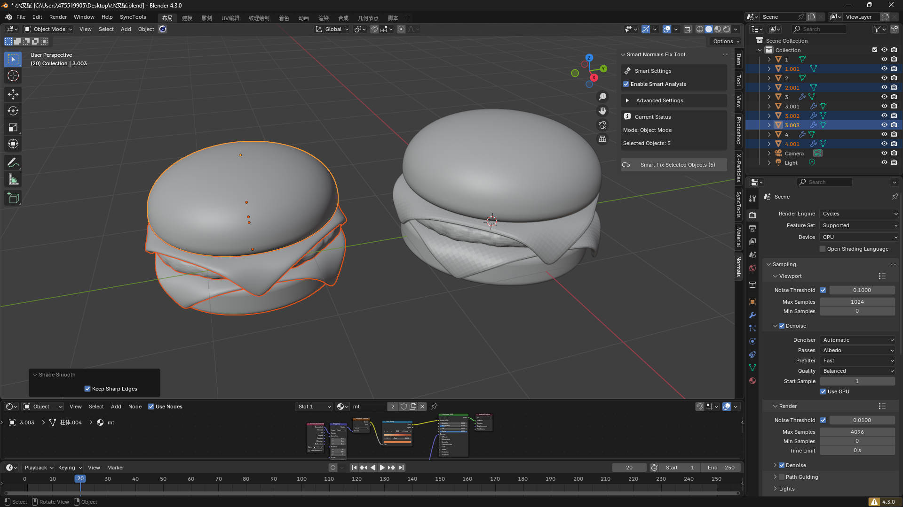
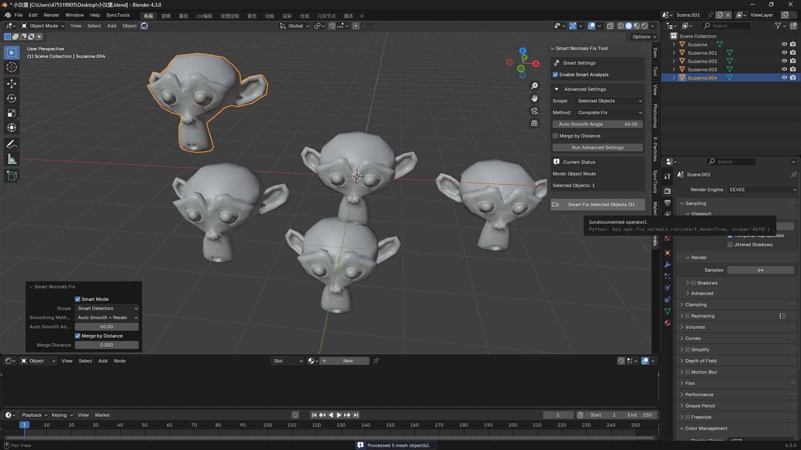

智能正常s Fix 工具 – 智能网格法线修复
使用 Blender 最智能的法线修复工具，彻底改变您的网格工作流程。
告别繁琐的手动调整，迎接自动化的完美结果。

检测翻转法线、重复顶点及网格问题
根据几何体复杂度推荐最佳自动平滑角度
实时反馈问题与解决方案

面级精确处理：在编辑模式下修复选中的面
对象级批量处理：同时处理多个对象
场景全局清理：一键处理所有网格
智能检测：根据您的选择自动确定最佳处理范围
清除自定义分裂法线
带距离控制的智能顶点合并
重新计算外部法线
带智能角度推荐的自动平滑
应用平滑着色

简洁专业的面板设计
可折叠的高级设置，适合高级用户
实时状态更新
常见场景一键智能修复
节省大量时间
无需逐面修复
消除对自动平滑角度的猜测
无缝批量处理多个对象
专业级结果
行业标准算法
保持网格完整性
在各种几何类型上结果一致
适合新手到专业用户
一键操作，适合初学者
面向技术艺术家的高级控制
智能默认值，99% 的情况下开箱即用
游戏资产准备
3D打印清理
建筑可视化
产品渲染
动画就绪网格
CAD导入优化
Blender 版本：3.0+
分类：网格工具
安装：单个 .py 文件
性能：针对大型网格优化
系统影响：轻量级，内存占用极少
游戏开发
清理导入的 FBX/OBJ 文件
为引擎准备低模
修复法线贴图问题
3D打印
确保几何体为流形
修正内外翻转的法线
清理混乱的拓扑
建筑可视化
处理 CAD 导入文件
批量修复建筑组件
优化渲染就绪网格
为精细细节推荐 30° 自动平滑
为粗糙几何体建议 80°
查找重复顶点并建议合并
在需要时清除自定义分裂法线
"这个工具帮我节省了好几个小时。智能检测准确得令人惊叹！"
"终于有了一个理解我工作流程的法线工具。面级编辑真是改变游戏规则。"
"对于 CAD 导入来说简直完美。一键搞定一切。"
完整 Python 插件文件
安装说明
附示例的用户指南
Blender 3.0+ 终身更新
下载 .py 文件
前往 编辑 > 首选项 > 插件
点击 安装 并选择文件
启用 智能正常s Fix 工具
在 3D视口 > N面板 > 法线 标签中找到它
我们根据用户反馈持续改进算法并添加新功能。
您的购买包含所有未来更新。
立即改变您的法线工作流程。
获取 智能正常s Fix 工具，体验 Blender 网格处理的未来。
✔ 兼容 Blender 3.0+ | 📥 即时下载 | 💸 30天退款保障
智能正常s Fix 工具 - 用户文档
Blender 3.0+
Python 3.7+（随 Blender 捆绑安装）
下载 fix normals.py 文件
打开 Blender
前往 编辑 > 首选项 > 插件
点击 安装
选择 fix normals.py 文件
启用插件（勾选"智能正常s Fix 工具"）
工具将出现在 3D视口侧边栏的 法线 标签下
选择您的网格对象，或进入编辑模式并选择面
在 3D视口侧边栏中打开 法线面板（N键）
点击 智能修复
完成！您的法线现在已正确定向并平滑
使用默认设置开箱即用
默认启用智能模式
高级设置默认折叠，界面简洁
智能设置
启用智能分析以自动检测和修复
高级设置（可折叠）
范围：选择目标（选中的面 / 对象 / 所有网格 / 智能检测）
方法：自动平滑、重新计算法线或完整修复
自动平滑角度：平滑阈值
按距离合并 & 合并距离：顶点合并控制
当前状态
显示当前模式（编辑/对象）
显示选择详情（面/对象数量）
提供实时反馈
操作按钮
智能修复选中的面
智能修复选中的对象
智能修复所有网格
进入 编辑模式（Tab键）
选择面
点击 智能修复选中的面
选择网格对象
点击 智能修复选中的对象
点击 智能修复所有网格
场景中所有网格对象将被处理
编辑模式 + 选中的面 → 处理选中的面
对象模式 + 选中的对象 → 处理选中的对象
无选择 → 处理所有网格
仅自动平滑 → 快速平滑，不重新计算法线
仅重新计算法线 → 重新计算外部法线，清除自定义数据
完整修复（推荐） → 两者结合，实现最彻底的清理
按距离合并会合并重叠的顶点
默认阈值：0.0001 单位（非常精确）
适用于清理导入的模型
翻转的面
重复顶点
自定义分裂法线
几何体复杂度
精细几何体（< 30°）→ 自动平滑 30°
中等几何体（30–60°）→ 自动平滑 60°
粗糙几何体（> 60°）→ 自动平滑 80°
重复顶点 → 启用按距离合并
自定义法线 → 清除分裂法线
"智能Detection: Using SELECTED_FACES mode"
"Found 5 potentially flipped faces"
"处理ed 12 selected faces"
"请进入编辑模式并选择面" → 进入编辑模式（Tab键）并选择面
"未选中任何面" → 确保已选择面（使用数字键3切换到面选择）
"当前对象不是网格对象" → 请选择网格，而非灯光/相机
"在所选范围内未找到网格对象" → 检查选择或范围设置
大型网格：使用面级处理
多个对象：逐个处理
复杂场景：使用"选中的对象"范围
智能模式与高级设置有什么区别？
智能模式自动优化，高级设置允许手动控制。
何时使用面级处理与对象级处理？
面级用于局部修复，对象级用于全面清理。
按距离合并是什么？
在指定距离内合并重叠的顶点。
为什么推荐不同的自动平滑角度？
角度取决于几何体复杂度——细节越多角度越小，越粗糙角度越大。
可以撤销更改吗？
可以，Ctrl+Z 适用于此工具。
与修改器兼容吗？
仅在基础网格上工作。如有需要，请先应用修改器。
与其他法线工具兼容吗？
兼容，但建议先运行此工具以清除有问题的自定义法线。
导入模型 → 先清理法线
UV展开前 → 修复法线以避免着色问题
绑定骨骼前 → 确保角色模型法线正确
渲染前 → 最终法线检查
大型网格使用面级处理
分批处理对象，而非一次性全部处理
使用智能模式进行自动优化
始终在渲染视图中检查
启用 面朝向 叠加层进行验证
在不同光照设置下测试
查阅故障排除章节
确保使用 Blender 3.0+
验证插件的安装和激活
改进的智能分析
新的处理选项
性能增强
错误修复
Blender 3.0+ → 完全支持
Blender 2.93 → 有限支持
未来版本 → 提供更新